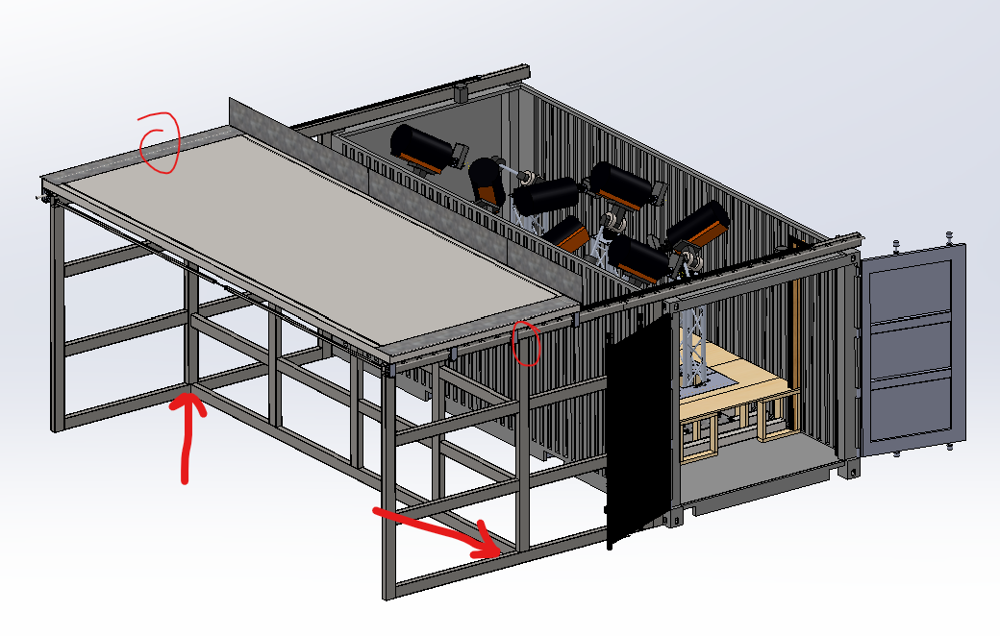
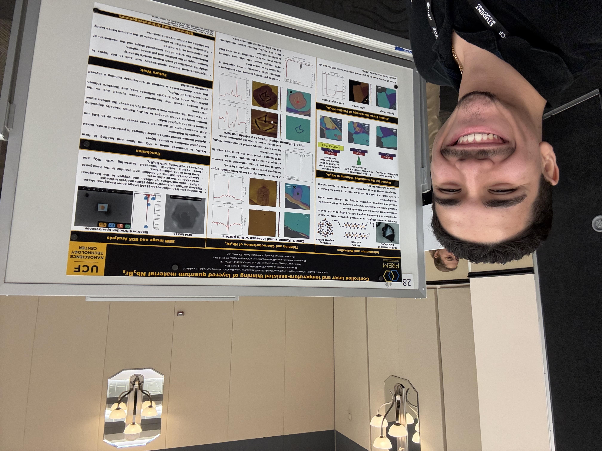
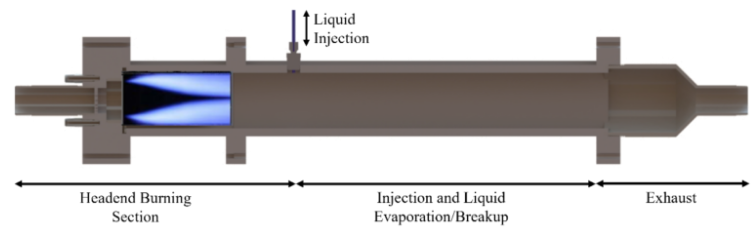
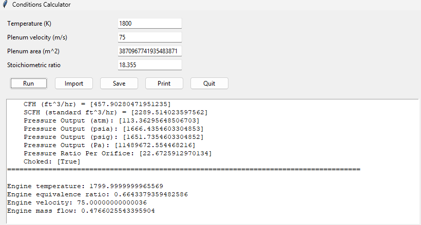

Javier A. Cuevas Chabrier
Mechanical Engineering & Computer Science Student @ the University of Central Florida
Research Experience
FSU Young Scholars Program
Studied perovskite materials for LED applications under Professor Biwu Ma, learned materials characterization with X-ray diffraction, and presented research findings.
Original Polyoculus Assembly (OPA)


Supported telescope assembly research in UCF CREOL by designing roof concepts and assisting with support-structure planning for the deployed enclosure.
Astrodynamics, Space, and Robotics Lab (ASRL)

Worked under Professor Elgohary on orbital path efficiency research using ROSS and assisted with electronics housing drawings for lab hardware.
Nanophysics and Nanoelectronics Group

Studied quantum materials by growing molybdenum disulfide, building a heated transfer stage, presenting poster work, and exploring ML height-profile prediction.
Propulsion and Energy Research Lab (PERL)


Supported propulsion research by calculating facility conditions, studying hydrogen flashback, developing measurement and emissions tools, and assisting chamber manufacturing.